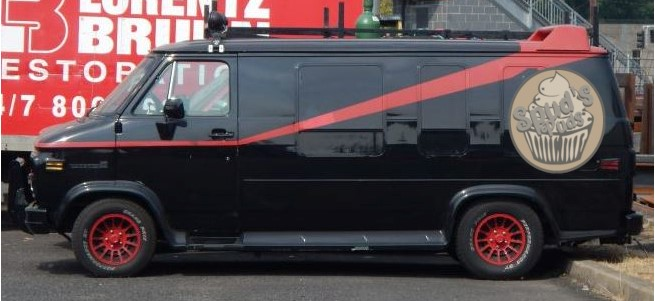

Spud's Puds was started in 1982 when a group of ex service-men decided to bake and create the best cakes this side of Lake Ontario.
They started out slow, but now have such a reputation that customers come from all corners of the globe to taste and witness Spud's Puds.
Since 1985 Spud's Puds has provided delivery free of charge to the local area, we do not ship by aircraft!

Templeton Peck – Responsible for sales and customer enquiries.
Mr T. Peck also known as “Faceman”, has been responsible for helping our customers with any issues or orders.
H.M Murdock – Head Baker
Mr Murdock also known as “Howlin’ Mad” Murdock is the person responsible for the amazing creations that we provide to our customers.
B.A Baracus – Delivery Driver/Engineer.
B.A started as our delivery driver when we first started creating treats and has gone on to show his skills in fixing all things mechanical so is now also our official maintenance department.
John Smith – Founder and manager.
“Hannibal” Smith is the person who connected all our employees and started Spud’s Puds after retiring from the armed forces. He is responsible for keeping the operation running smoothly and keeping all our projects running on time.